Named Routes & Bottom Navigation Bar
Praktikum ini membahas penggunaan Named Routes dan Bottom Navigation Bar
pada aplikasi Flutter. Materi meliputi penggunaan routes untuk mendefinisikan rute setiap halaman
dan initialRoute untuk menentukan halaman pertama yang ditampilkan. Selain itu, praktikum
membahas penggunaan Bottom Navigation Bar untuk memudahkan perpindahan antarhalaman utama
melalui ikon dan label navigasi. Konsep tersebut diterapkan pada pembuatan aplikasi sederhana yang memiliki
navigasi terstruktur sehingga pengguna dapat berpindah antarhalaman dengan lebih mudah dan terorganisasi.
Menerapkan Named Routes untuk mengatur navigasi antarhalaman secara terpusat, terstruktur, dan rapi.
Membangun menu navigasi di bagian bawah layar menggunakan BottomNavigationBar untuk memudahkan perpindahan antarhalaman.
Mengintegrasikan halaman Dashboard, Riwayat, dan Profil ke dalam satu struktur aplikasi dengan navigasi yang konsisten.
Mengatur tema aplikasi serta mendefinisikan rute halaman menggunakan routes dan menentukan halaman
awal melalui initialRoute.
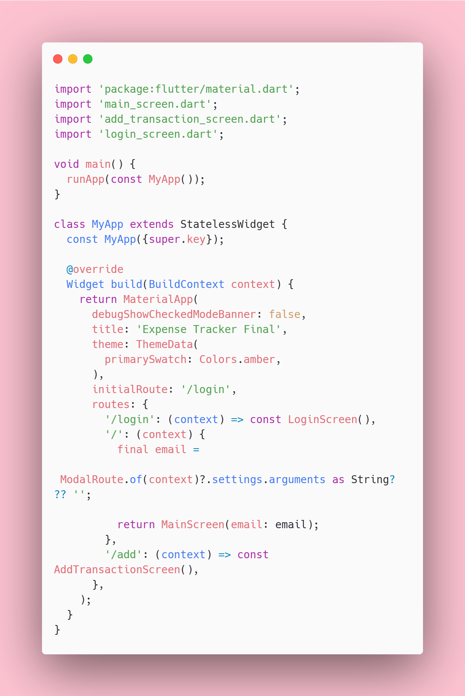
Mengatur tampilan Dashboard, Riwayat, dan Profil serta perpindahan tab menggunakan BottomNavigationBar
dan setState() untuk memperbarui indeks halaman aktif.
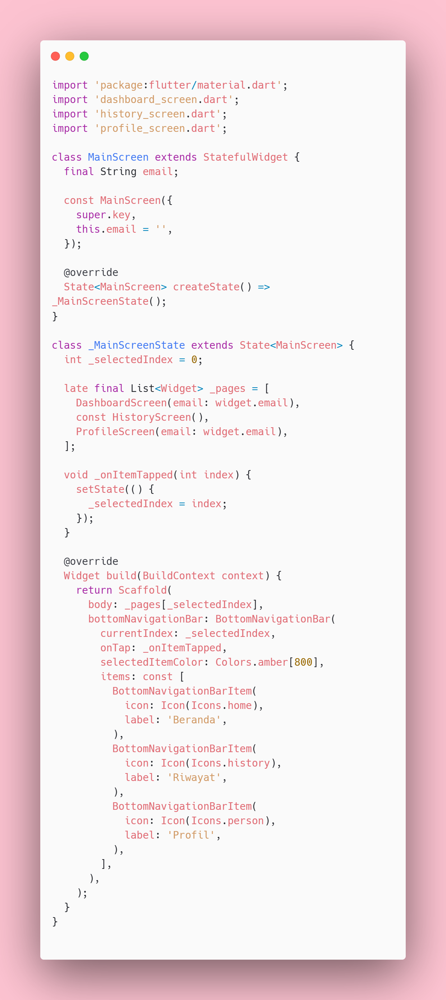
Mengubah navigasi tombol tambah transaksi dari Navigator.push menjadi Navigator.pushNamed agar
perpindahan ke halaman form input menggunakan Named Routes /add.
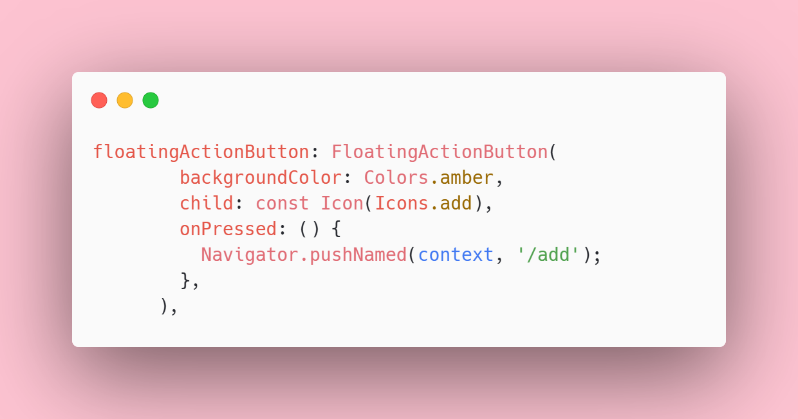
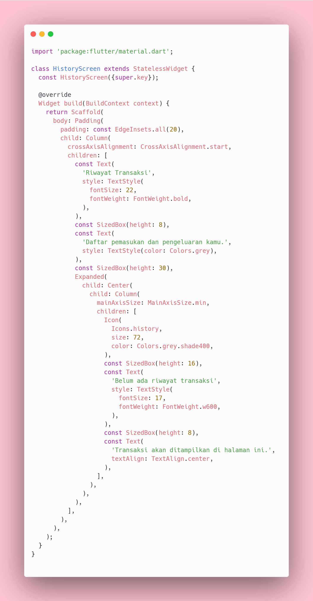
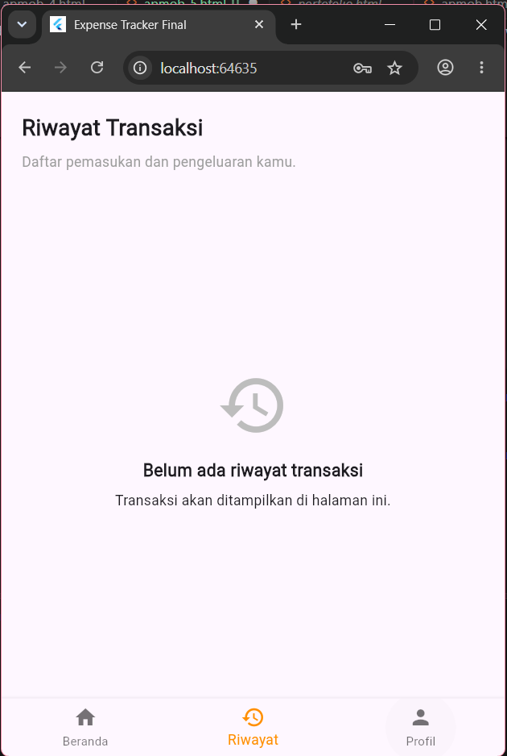
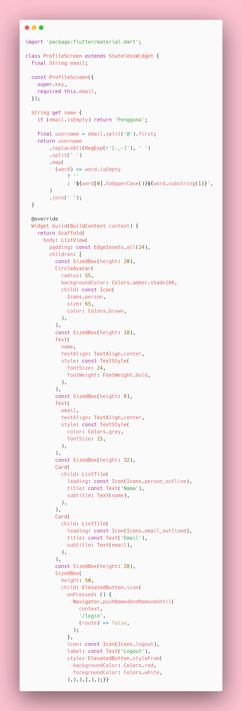
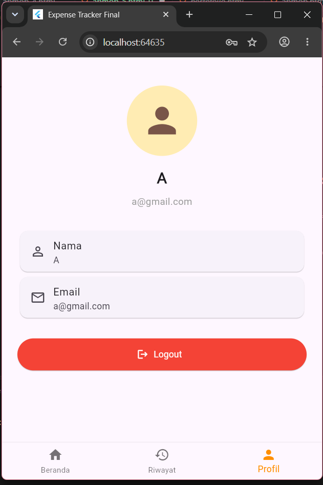
Saat tombol login diklik, maka akan tampil halaman utama dan aplikasi dan menampilkan informasi email yang diinputkan oleh user.
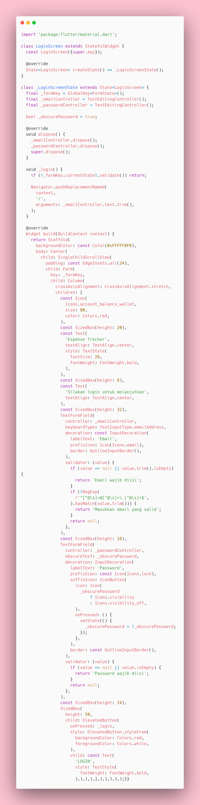
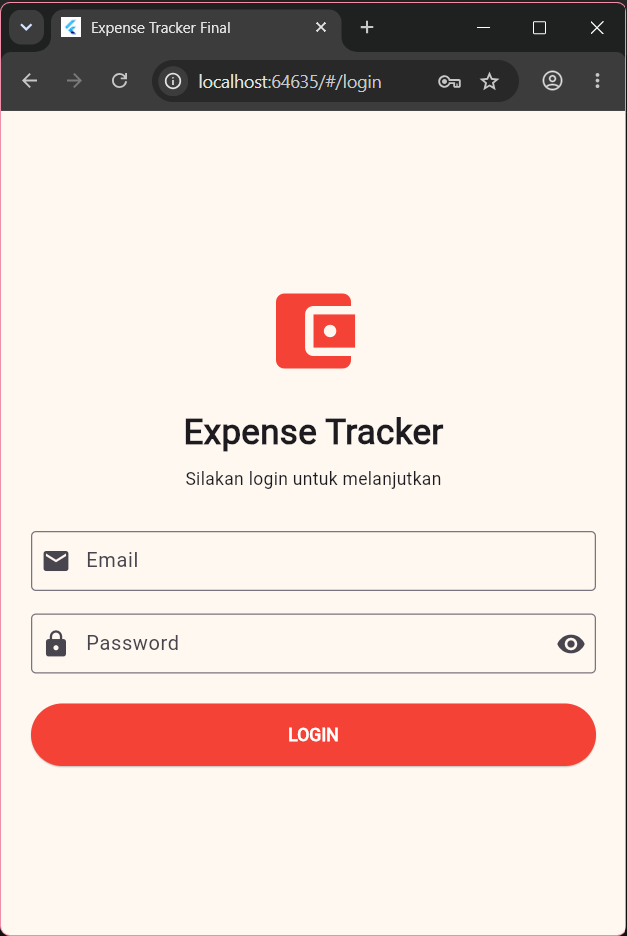
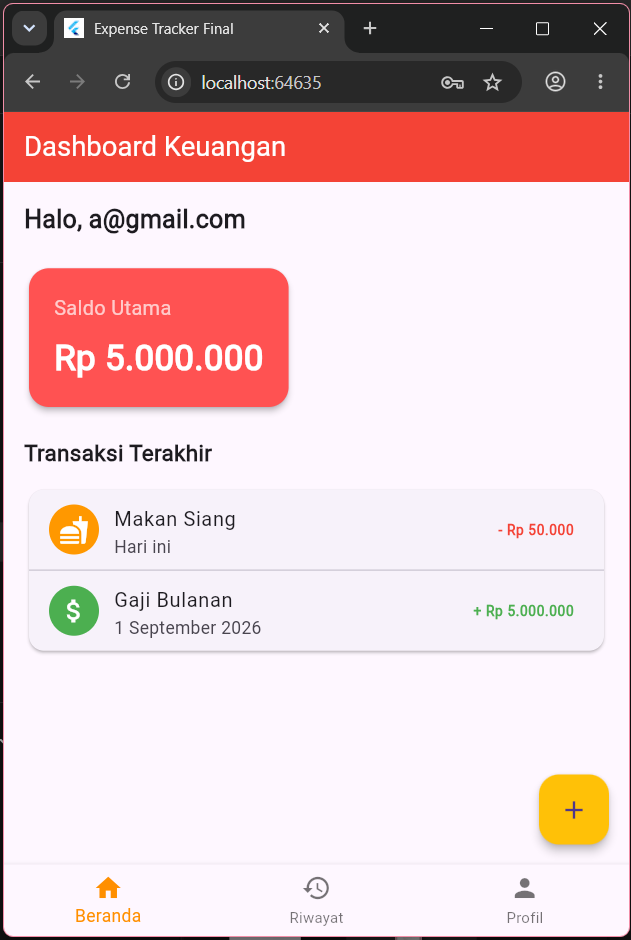
Project ini merupakan hasil penggabungan dan pengembangan kode dari Praktikum 1 hingga 5 menjadi satu aplikasi Expense Tracker berbasis Flutter. Aplikasi ini mengintegrasikan berbagai halaman dan fitur, seperti dashboard, tambah transaksi, riwayat, dan profil, dengan navigasi yang terstruktur. Project kemudian dibangun menjadi file APK agar dapat dijalankan pada perangkat Android.
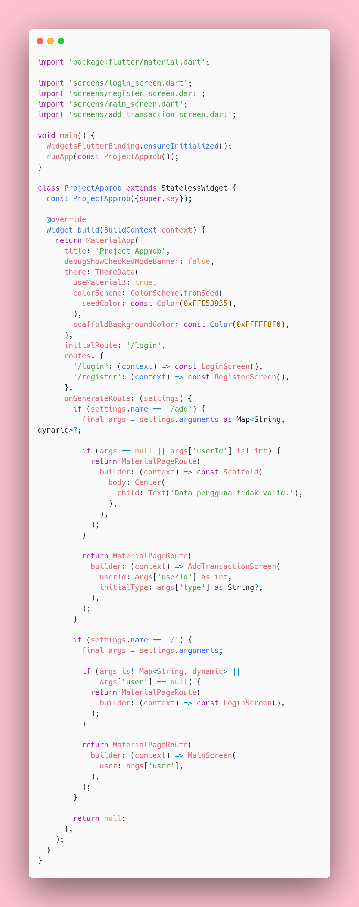
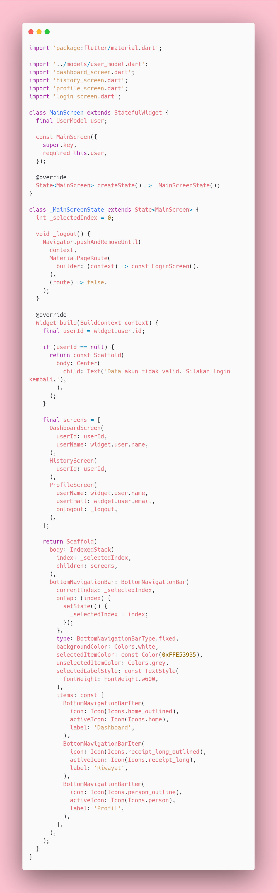
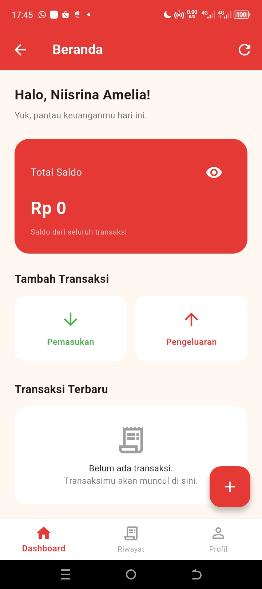
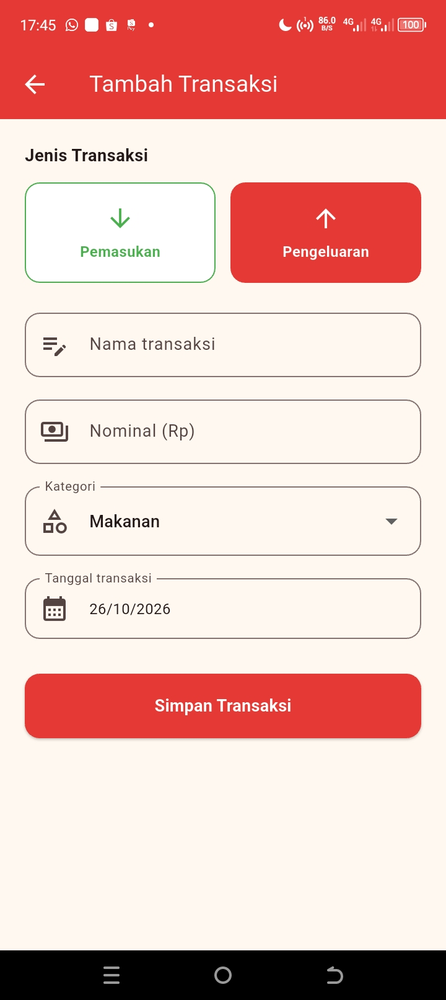
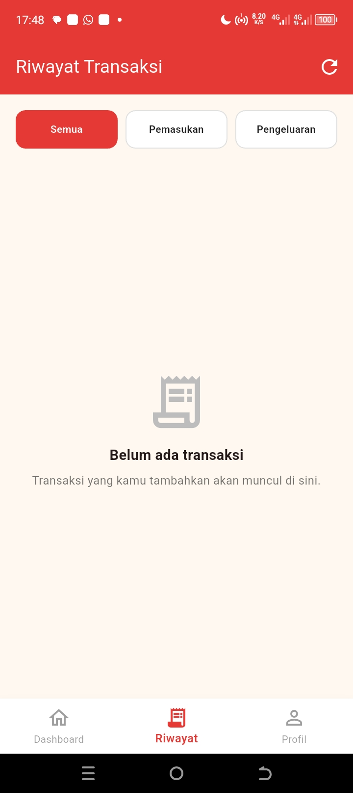
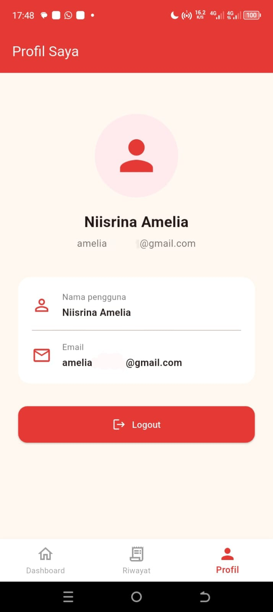
Aplikasi dibangun menjadi file APK menggunakan perintah flutter build apk --release.
File APK yang dihasilkan kemudian dipasang pada perangkat Android untuk menguji tampilan dan fungsi aplikasi
secara langsung.
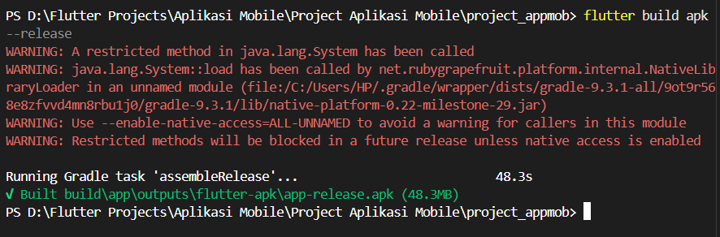
Source code dan file pendukung aplikasi Expense Tracker dapat diakses melalui tautan berikut.
Kode project praktikum dapat diakses melalui repository Github berikut.
Buka Github